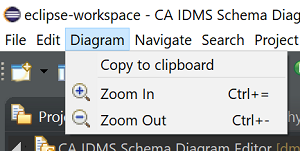

Diagram Menu
When you have opened a diagram in the diagram editor, you will notice that a Diagram menu becomes available:

The Copy to clipboard menu item does what it says: it copies the open diagram to the clipboard as an image; doing
so allows you to subsequently paste the image in your favorite graphics program (Paint, Preview, ...). This can be of
help if you want to copy some parts of a diagram in a document for example, or - in the case of big diagrams - this can be an
alternative to printing the diagram, because directly printing large diagrams can be challenging.
For older people (like myself), the Zoom menu items can be of interest. Beware that the zoom percentage is saved
as a diagram attribute. The zoom percentage is also visible and adjustable on the
Eclipse main toolbar.